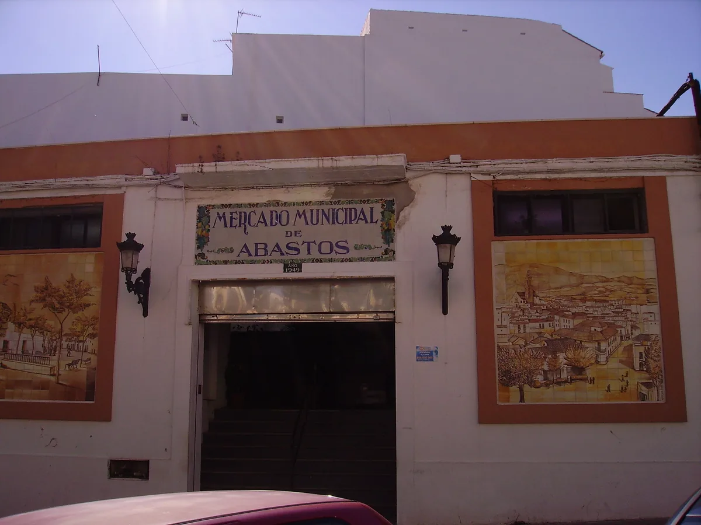
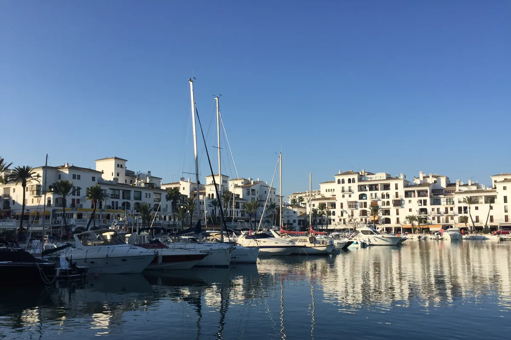

De zone
Van de boulevard tot de polo
De zeven plaatsen, van de boulevard tot de polo, staan hieronder. Elke plaats heeft een korte beschrijving en een momentopname van wat er nu te koop staat.
San Pedro de Alcántara · Estepona · Casares · Manilva · Sotogrande
Westersol helpt u een woning te vinden tussen San Pedro de Alcántara en Sotogrande. U vertelt wat u zoekt. Wij kijken dat na en stellen u voor aan één lokale makelaar die we hebben getoetst. De bezichtigingen en de onderhandeling doet de makelaar. Van ons betaalt u geen makelaarsfee.

Deze kust is geen eenheidsworst. San Pedro is een echte plaats, met een lange boulevard aan het strand. Estepona heeft een oude binnenstad en een echte haven. Verder naar het westen klimmen de dorpen tegen de heuvel, met zicht op Gibraltar en, bij helder weer, op Afrika. Elke gemeente heeft een ander tempo en een andere prijs. Dit is het begin van de gids.
De zeven plaatsen, van de boulevard tot de polo, staan hieronder. Elke plaats heeft een korte beschrijving en een momentopname van wat er nu te koop staat.
Bij een bestaande woning in Andalusië betaalt u 7 procent overdrachtsbelasting (ITP). Bij een typische nieuwe woning is dat 10 procent btw plus 1,2 procent zegelrecht (AJD), samen 11,2 procent. Daarbovenop komen notaris, kadaster en meestal een advocaat — posten zonder vast wettelijk percentage. Het vaak genoemde interval van ongeveer 10 tot 13 procent extra is een richting, geen offerte. De aankoopgids zet de bronnen ernaast.
Eerst NIE en een advocaat die voor u werkt, niet voor de verkoper. Daarna reservering, arras-contract, due diligence en de escritura bij de notaris. Een aankoop duurt vaak maanden. Daarom vragen wij naar uw planning: binnen twaalf maanden, of later.
Lees de volledige aankoopgids Plaatsengidsen





Een momentopname van woningen te koop in elk van de zeven plaatsen, volgens Idealista op 15 november 2026. Dit zijn geen advertenties op deze site.

San Pedro de Alcántara heeft een lange boulevard aan het strand en een centrum dat nog als dorp voelt, met Guadalmina ernaast.
1.079 woningen te koop (Idealista, 15 november 2026).
De voorbeelden van die dag kostten tussen 395.000 euro en 1.395.000 euro.

Estepona is de oude binnenstad, de haven en, daarachter, de Sierra Bermeja.
5.580 woningen te koop (Idealista, 15 november 2026).
De voorbeelden van die dag kostten tussen 269.000 euro en 1.395.000 euro.

Casares ligt tegen de heuvel, een wit dorp, met golf en zeezicht aan de kust.
809 woningen te koop (Idealista, 15 november 2026).
De voorbeelden van die dag kostten tussen 330.000 euro en 775.000 euro.

Manilva is een gewone woonplaats met een zeedijk.
98 woningen te koop in het dorp zelf, niet in de hele gemeente (Idealista, 15 november 2026).
De voorbeelden van die dag kostten tussen 250.000 euro en 750.000 euro.

Sabinillas is een gewone woonplaats met een zeedijk.
149 woningen te koop (Idealista, 15 november 2026).
De voorbeelden van die dag kostten tussen 220.000 euro en 1.100.000 euro.

La Duquesa draait om de jachthaven.
235 woningen te koop in La Duquesa en Puerto de la Duquesa samen (Idealista, 15 november 2026).
De voorbeelden van die dag kostten tussen 275.000 euro en 699.000 euro.

Sotogrande is polo, golf, de marina en de afgesloten urbanisaties, met Alcaidesa ernaast.
879 woningen te koop (Idealista, 15 november 2026).
De voorbeelden van die dag kostten tussen 279.000 euro en 1.350.000 euro.
Indicatief, gebaseerd op openbare advertenties van 15 nov 2026.
Dit zijn voorbeelden van het soort nieuwbouw dat u kunt vinden tussen San Pedro de Alcántara en Sotogrande. Het zijn geen woningen die hier te koop staan. Westersol heeft geen samenwerking met een project en verkoopt zelf geen nieuwbouw.
Nieuwe appartementen op een korte wandeling van de boulevard en het strand, dicht bij het centrum.

Appartementen in eerste en tweede lijn aan de kust tussen San Pedro en het centrum van Estepona.

Townhouses en villa's boven Estepona, vaak met zicht op zee en op de Sierra Bermeja.
Appartementen bij de golfbanen aan de kust van Casares, ook in de buurt van Finca Cortesin.

Woningen met zicht op de jachthaven, en nieuwe appartementen op een paar minuten van de haven.

Nieuwe villa's en appartementen in de urbanisaties, bij de golf, de polovelden en de marina.
Na de intake laat de partner-makelaar u de projecten zien die op dat moment echt te koop zijn.

Wij zijn een gids en een introductie, geen makelaar en geen tussenpersoon in de onderhandeling.
Budget, termijn, zone, type woning en of u cash koopt of met een hypotheek.
Wij nemen in het Nederlands contact op en stellen bij waar nodig.
Met uw toestemming stellen wij u voor aan één lokale makelaar, eerst schriftelijk, voordat er contact is.
Bezichtigingen, bod en onderhandeling liggen bij de partner. Wij volgen de zaak tot de eigendomsakte.
Wat hieronder staat is een voorbeeld van het traject. Het gaat niet over een echte klant.
Een stel uit Utrecht zoekt een townhouse vlak bij de oude binnenstad van Estepona. Zij vullen het formulier in: budget, termijn en de zone die ze in gedachten hebben.
Westersol neemt contact op in het Nederlands, toetst die punten en vraagt of zij akkoord gaan met een voorstelling aan één lokale makelaar. Als zij ja zeggen, gaat de introductie schriftelijk de deur uit. Daarna regelt de makelaar de bezichtigingen en de onderhandeling.
Dit blok blijft leeg tot een echte koper schriftelijk instemt dat wij hun woorden hier mogen gebruiken.
Voor kopers uit Nederland, België of Frankrijk die een permanente woning, tweede huis of rustige investering zoeken tussen San Pedro de Alcántara en Sotogrande, met een budget vanaf ongeveer €300.000 en een horizon van twaalf maanden of korter. Wie nog aan het oriënteren is, mag het formulier ook invullen; die aanvragen behandelen wij als informatie, niet als directe introductie.

Kort formulier. Wij antwoorden in het Nederlands. Uw gegevens gebruiken wij alleen om uw aanvraag te behandelen en, alleen met uw latere instemming, door te geven aan een partner-makelaar.